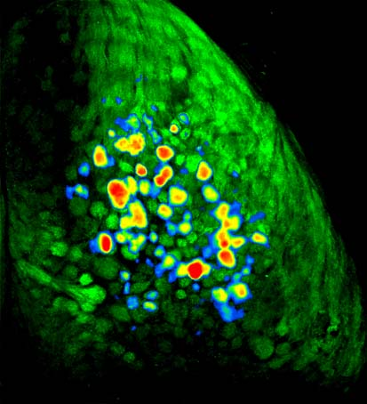
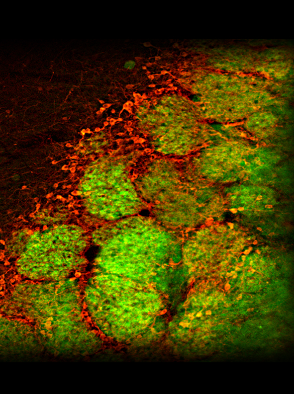

McGannLab
IMAGING NEURAL REPRESENTATIONS OF ODORS
In the mouse olfactory system, there are about 1000 different types of odor receptors (the largest class of genes in the mammalian genome). In the nose, millions of olfactory receptor neurons each express just one out of these thousand different types, and thus respond to only a subset of all the odors out there in the world. Though cells expressing these different receptor types are more-or-less mixed together in the nose, as they send their axons back to the brain's olfactory bulb they sort themselves out in a remarkable fashion so that all of the neurons expressing a particular receptor type project to just one or two spots, which are called glomeruli (these are the green circles in the mouse brain to the right). In many experiments we use a strain of mice that have been genetically engineered so that these neurons fluoresce when they release neurotransmitter. In these mice, when an odor enters the nose, it activates a subset of the thousand different types of receptor neurons, which causes them to release transmitter in a corresponding subset of glomeruli in the olfactory bulb. These glomeruli thus get brighter. By implanting a window in the mouse's skull and looking through a microscope, it is therefore possible to directly observe the characteristic patterns of neural activity evoked by different odors in a living, breathing mouse. The movie below shows a close-up view of part of a mouse olfactory bulb while the mouse is smelling the fruity odorant methyl valerate. You will see a little motion around the blood vessels at first, but when the odor comes on (you'll see a little circle appear in the upper left) you'll see a subset of the olfactory bulb glomeruli get much brighter.
Different odors drive odor activity in different sets of olfactory bulb glomeruli, and this odor input is stronger when the mouse is inhaling than when it is exhaling. To illustrate this idea, the movie below shows a view of the dorsal surface of both the left and right olfactory bulbs of a different kind of mouse that has been genetically engineered so that its periglomerular interneurons (inhibitory interneurons that surround each glomerulus) express a fluorescent activity indicator called GCaMP6. In these mice, odor presentation evokes pulses of fluorescence from the interneurons around active glomeruli during each inhalation.
FEAR LEARNING SHAPES SENSORY INPUT TO THE BRAIN
Most people (including most scientists) would guess that the brain's olfactory system would always respond more or less the same way if an odor was encountered repeatedly - that way it would be easy to recognize the odor and respond appropriately. However, we have found that actually even the earliest parts of the olfactory system change how they respond depending on what the mouse knows about the odor. An example of this is shown in the accompanying picture, adapted from our recent article in the journal Science , which shows the pattern of odor-evoked input from the nose to the brain before (top row) and after (bottom row) the mouse learns that one of the two odors means it's going to receive a mild but unpleasant electric shock. As you can see, after learning the nose sends much larger signals to the brain for the odor that predicts the impending shock (middle column) but not for the control odor that doesn't. You can learn more about this phenomenon from our radio interview with Charles Osgood or by listening to a Podcast at Science Magazine . We have also found that less dramatic changes, like increasing the frequency of an odor in a mouse's environment can also cause notable changes in the brain's response to that odor and related odors.
NEURAL CIRCUITRY FOR PROCESSING ODOR SIGNALS
The nervous system processes incoming odor information in complex and poorly understood ways, but figuring out how this circuitry works and how it changes with learning and experience may be the key to understanding the system. We use a wide range of methods to begin to explore the physiology and neurochemistry of individual neurons involved in odor processing, including two-photon microscopy (which allows us to watch the activity of dozens of individual cells simultaneously while the mouse is smelling odors), electrophysiology (where sets of electrodes are implanted into the brain to observe the activity of small clusters of neighboring neurons), opto- and chemogenetics (where we use light or special chemical compounds to manipulate the activity of specific types of cells), pharmacology (where we locally apply drugs to the brain to observe differences in physiology and perception), and immunohistochemistry (where we use antibodies to observe the expression of certain proteins and neurotransmitters). One part of the circuit we have studied intensively is the olfactory bulb glomerulus, where "bottom-up" information about the odors present in the nose first converges with "top-down" information about the mouse's expectations. We have also learned quite a lot about how the input from the nose to the brain is controlled by a GABAergic presynaptic inhibition that functions like a volume knob for sensory input to each olfactory bulb glomerulus. The picture to the right shows glomeruli (the round green structures) in a mouse olfactory bulb in which the receptor neuron axons coming in from the nose are green and some of the inhibitory neurons that surround the glomeruli are stained red (using an immunohistochemical label for the enzyme tyrosine hydroxylase, which makes dopamine).
In some experiments we are interested in observing the activity of groups of individual neurons in the olfactory bulb, not just the overall pattern over whole surface (as in the movies above). In these experiments we use two-photon microscopy to "zoom" way in and visualize clusters of cells expressing various fluorescent activity indicators. The movie below shows a group of individual periglomerular interneurons, which exhibit a rhythmic pulsing activity at "rest" and which become much more active when they receive odor-evoked synaptic input from the olfactory nerves - you'll see their dendrites light up and the body of many cells become brighter.
BEHAVIORAL ASSESSMENT OF OLFACTORY PERCEPTIONS

For us it is not enough to see that different odors evoke different patterns of neural activity in the brain - we also want to understand how those patterns of activity relate to the mouse's perception of the odor. Unfortunately, mice can't speak and describe what the odor smells like to them, so we have to come up with clever ways of asking them. To do this, we use a variety of behavioral tasks in which the mouse is trained to do one thing (say, poke its head into a little hole in the cage) when it smells a particular odor, and to do something different when it doesn't smell the odor (or smells a different odor, or whatever). Once a mouse has learned how to do this we can change the odor or change something about the mouse (for instance by teaching it something about the odors, or by infusing a drug into its brain) and see if they act differently. This allows us to figure out how their ability to detect or discriminate odors changes when the patterns of neural activity evoked by those odors changes. The mouse on the right has been trained to dig in cups of sand scented with the odor hexanal but not to dig in cups scented with the very similar odor heptanal. During experients we can watch how the mouse discriminates between these odors and then test whether infusing tiny amounts of specific drugs through the cannula surgically implanted on this mouse's head make the odors easier or harder to tell apart.
THE EFFECTS OF NEUROTOXICANTS
The olfactory epithelium in the nose is the only place in the body where neurons are directly exposed to the outside world. This makes them uniquely vulnerable to toxic substances in the environment, especially those that are airborne and thus get into the nose when we breathe. In addition to affecting the olfactory neurons in the nose, some of these substances can get into the neurons and are transported directly to the brain, bypassing the blood-brain barrier that normally protects the central nervous system. One of our lines of research explores the effects of frequently aerosolized neurotoxicants, like cadmium (found in cigarette smoke) and manganese (found in welding fumes), on neurons in the olfactory system. We have used optical imaging, behavioral techniques, and immunohistochemistry to explore the physiological, perceptual, and neurochemical consequences of these exposures and to explore the rehabilitation process after exposure. The image on the right depicts the increase in fluorescence that happens during odor presentation in the olfactory bulbs of a synaptopHluorin-expressing mouse (like the one in the movie above, only zoomed way out to see both bulbs at once) that has been exposed to a high dose of intranasal cadmium on the right side but not the left. There is almost no response to odors on the cadmium-exposed side. See our Publications list for links to some of our findings.
Press and Outreach
For a short video on how the olfactory system works featuring McGann Lab personnel, check out this piece from Rutgers Today!